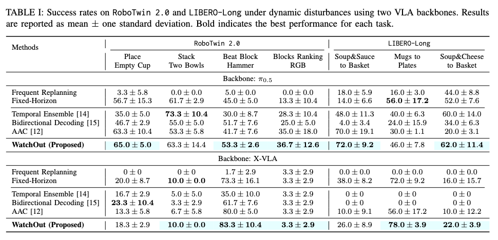

Not always continue. Not always replan.
Fixed-horizon execution can keep following an outdated chunk after the scene changes, while frequent replanning can repeatedly replace an otherwise coherent plan. Existing adaptive strategies mainly change how updated predictions are incorporated or how long a chunk is executed; WatchOut instead makes active-plan validity an explicit execution-time decision.
The missing execution-time decision
The central question is not simply how often to generate a new chunk, but whether the currently active chunk should still be trusted after the observation changes.

Does explicitly reassessing the active action chunk improve robustness to dynamic disturbances over existing action-chunk execution strategies?
Can active-to-candidate consistency together with candidate agreement provide an effective selective retain-or-replan signal?
Temporal ensembling and guided decoding coordinate or combine updated predictions across timesteps.
Question: How should new predictions be incorporated?Uncertainty- or phase-aware execution changes how long a generated chunk is followed.
Question: How long should this chunk be executed?Reassesses the currently active chunk itself before deciding whether any replacement is needed.
Question: Is the active plan still valid now?Active-plan reassessment + value-guided replacement
The execution mechanism uses current policy predictions to test whether the scheduled action remains compatible with the latest observation, then invokes the chunk-level critic only when replacement is required.

Reassess the active chunk
Evaluate the plan already being executed, rather than automatically replacing it or only predicting an execution horizon.
Use candidate agreement, not one sample
Combine active-to-candidate disagreement with candidate-to-candidate agreement so a single stochastic prediction is not sufficient evidence for replanning.
Separate trigger from replacement
Consistency decides when to replan; the conservative chunk-level critic decides which candidate becomes the new active chunk only after that decision.
Consistency-based replanning score
A low active-to-candidate consistency indicates deviation from the active action, while a high candidate-to-candidate consistency indicates that current predictions support a common alternative.
replan if Ct > δ; otherwise retain the active chunk
Value-guided replacement
Candidate valuation is deliberately downstream of the retain-or-replan decision; the critic does not act as the replanning trigger.
Qϕ is the conservative chunk-level value estimate
Retain
Keep the remaining active chunk when it remains compatible.
Replan
Replace the chunk only when the score crosses the decision boundary.
Two VLA backbones, two manipulation benchmarks
WatchOut is evaluated under dynamic object-level disturbances using π0.5 and X-VLA on RoboTwin 2.0 and LIBERO-Long, with the same execution protocol used for all baselines.
RoboTwin 2.0
Long-horizon manipulation tasks with small and large object displacements introduced after an action chunk has been generated.
LIBERO-Long
Long-horizon language-conditioned manipulation tasks evaluated under the same retain-or-replan setting.
Dynamic disturbances test whether the active chunk becomes outdated
A task-relevant object is displaced after an action chunk has already been generated. This creates a controlled mismatch between the active plan and the latest observation.

Robust execution across two VLA backbones and two benchmarks
Table I summarizes success rates under dynamic disturbances for π0.5 and X-VLA on RoboTwin 2.0 and LIBERO-Long. The results evaluate WatchOut across different manipulation tasks and action-chunk policies under the same disturbance protocol.

RoboTwin · Place Empty Cup
LIBERO · Soup&Sauce to Basket
X-VLA · Beat Block Hammer
Takeaway: The results support explicit active-plan reassessment as an effective mechanism for robust action-chunk execution under dynamic disturbances.
When replanning fires and what happens next
Action consistency determines when the active plan should be reconsidered, while the chunk-level critic determines which replacement to use after replanning is triggered.


Interpretation: WatchOut explicitly separates active-plan reassessment from candidate replacement. Candidate-to-candidate agreement provides complementary evidence for retain-or-replan decisions under stochastic predictions, while value guidance remains downstream of the replanning trigger.
Physical disturbance recovery with SO-ARM101
We further deploy WatchOut on an SO-ARM101 robot under external physical disturbances. Task-relevant objects are displaced during action-chunk execution by human intervention or interaction with another robot, without resetting the episode.
Selective replanning
WatchOut reassesses the active chunk after each updated observation and triggers replanning when the scheduled action becomes inconsistent with current predictions.
Closed-loop recovery
The selected replacement chunk redirects execution toward the displaced object, allowing the task to continue under real sensing and actuation.